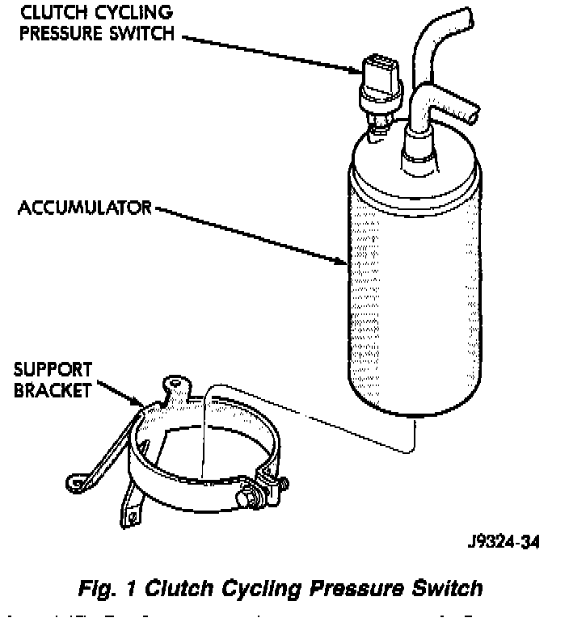
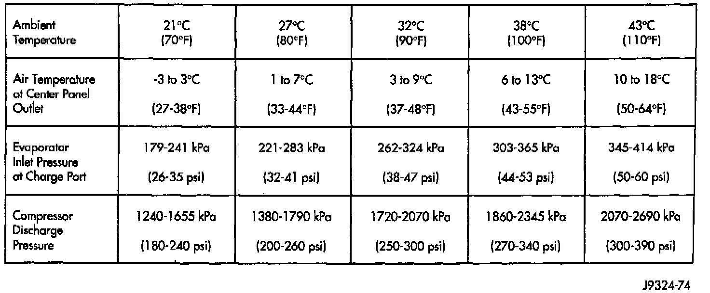

A/C Performance Testing
The air conditioning system is designed to provide the passenger compartment with low temperature and low humidity air. The evaporator, located in the heater-A/C unit behind the instrument panel, is cooled to temperatures near the freezing point. As warm damp air passes over the fins in the evaporator, the air is cooled and moisture is removed to condense on the fins. During periods of high heat and humidity an A/C system will be more effective in the RECIRC mode. With the control set to RECIRC, only air from the passenger compartment passes through the evaporator. As the passenger compartment air dehumidifies, A/C performance levels improve.
Review Safety Precautions and Warnings before proceeding with this procedure. Air temperature in test room and in the vehicle must be 21 °C (70 °F) minimum for this test.
1. Connect an engine tachometer and manifold gauge set.
2. Set control to A/C, PANEL, RECIRC (temperature knob on full cool) and blower on HIGH.
3. Start engine and hold at 1,000 RPM with A/C clutch engaged.
4. Engine should be warmed up with windows and/or doors opened.
5. Insert a thermometer in the left center A/C outlet and operate the engine for 5 minutes.
Fig.1 Clutch Cycling Pressure Switch:

6. The A/C clutch may cycle depending on ambient conditions. If clutch cycles, remove the clutch cycling pressure switch connector from the switch located on the accumulator. Place a jumper wire across the terminals of the clutch cycling pressure switch connector.
7. With the A/C clutch engaged, record the discharge air temperature and the compressor discharge pressure.
8. Compare the discharge air temperature to the A/C Performance (Temperature and Pressure) chart. If the discharge air temperature is high, refer to the Refrigerant Service Procedures (Refrigerant Leak Testing and Refrigerant Charge Check).
System Leak Checking
Refrigerant Level Check
System Performance Temperature And Pressure Chart:

9. Compare the compressor discharge pressure to the A/C Performance (Temperature and Pressure) chart. If the compressor discharge pressure is high, refer to the Refrigerant Service Procedures (High Compressor Discharge Pressure).
High Compressor Discharge Pressure